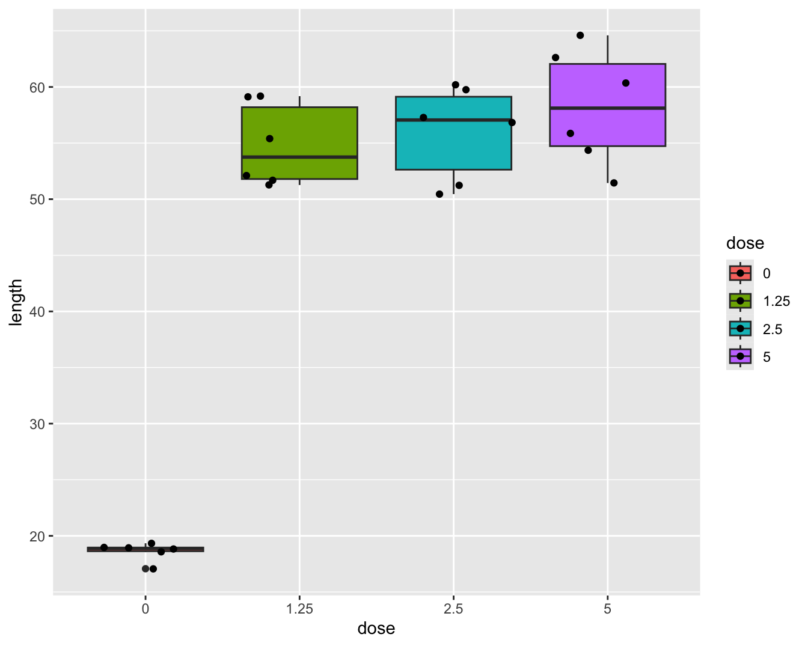
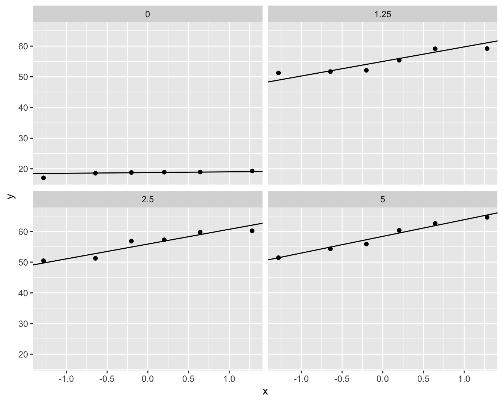

Alle methoden die in de vorige hoofdstukken behandeld werden, zijn zogenaamde parametrische methoden. Deze term duidt erop dat de geldigheid van de inferentie enkel correct is als er voldaan is aan parametrische veronderstellingen. Dit zijn voornamelijk de distributionele veronderstellingen, zoals dat de observaties normaal verdeeld zijn. Andere voorbeelden van een parametrische veronderstelling zijn de gelijkheid van varianties bij de two-sample \(t\)-test en ANOVA en de lineariteit van een regressiemodel.
Wanneer we over statistische besluitvorming spreken, is bijvoorbeeld de \(p\)-waarde van een statistische test, of de probabilistische interpretatie van een betrouwbaarheidsinterval enkel correct interpreteerbaar onder bepaalde veronderstellingen:
De \(p\)-waarde is de kans dat de teststatistiek \(T\) onder de nulhypothese meer extreem is dan de waargenomen waarde \(t\) (gegeven dat \(H_0\) waar is). Die kans wordt berekend op basis van de nuldistributie van \(T\). Deze distributie wordt bij parametrische testen afgeleid door te steunen op veronderstellingen over de verdeling van de observaties. Indien er niet voldaan is aan deze veronderstellingen, is de berekende \(p\)-waarde fout. Dit betekent dat de conclusies die op \(p\) gebaseerd worden, eveneens mogelijks fout kunnen zijn.
De berekening van bv. een \(95\%\) betrouwbaarheidsinterval steunt eveneens op distributionele veronderstellingen. Als er niet voldaan is aan de veronderstellingen, is er geen garantie meer dat de berekende intervallen de (correcte) interpretatie hebben dat dergelijke intervallen de juiste parameterwaarde omvatten met \(95\%\) kans.
Asymptotische theorie is misschien moeilijker te plaatsen onder parametrisch of niet-parametrisch. Je zou kunnen stellen dat bv. een \(t\)-test asymptotisch niet-parametrisch is, omdat bij erg grote steekproefgroottes de distributionele veronderstelling van normaliteit niet meer belangrijk is.
De reden waarom we in deze cursus een focus hebben op parametrische methoden is omdat ze efficiënter en meer flexibel zijn wanneer er aan de voorwaarden voldaan is. Efficiëntie betekent dat bij een constante steekproefgrootte de testen een grotere power hebben en dat de betrouwbaarheidsintervallen smaller zijn. Met meer flexibel bedoelen we dat het eenvoudiger is om de methoden in te zetten voor experimenten met meer complexe designs. Als er niet voldaan is aan de veronderstellingen van de parameterische methoden kunnen we voor bepaalde designs overschakelen naar niet-parametrische methoden die in deze situatie nog steeds formeel geldig zijn.
9.2 Vergelijken van twee groepen
9.2.1 Cholestorol voorbeeld
In een studie werd de cholesterolconcentratie in het bloed gemeten bij 5 patiënten (groep=1) die twee dagen geleden een hartaanval hadden en bij 5 gezonde personen (groep=2). De onderzoekers wensen na te gaan of de cholesterolconcentratie verschillend is bij hartpatiënten en gezonde personen. Boxplots en qqplots van de data worden weergegeven in Figuur 9.1 en 9.2.
Figuur 9.2: Qqplot van de cholesterol concentratie in het bloed bij hartpatiënten (groep 1) en gezonde individuen (groep 2).
De boxplots en qqplots geven aan dat er mogelijks outliers in de data voorkomen. Het is moeilijk om inzicht te krijgen in de verdeling van de data gezien we maar 5 observaties hebben per groep.
9.2.2 Permutatietesten
De vraagstelling van het cholesterol voorbeeld is geformuleerd in erg ruime bewoordingen en dit laat vrijheid in de vertaling ervan naar een nulhypothese.
Laten we starten met een nulhypothese in termen van gemiddelden. Stel dat \(\mu_1\) en \(\mu_2\) de gemiddelde uitkomsten in behandelingsgroep 1 (hartpatiënten) en 2 (gezonde personen) voorstellen, dan zouden de hypotheses kunnen zijn:
\[H_0: \mu_1=\mu_2 \text{ versus } H_1: \mu_1\neq \mu_2.\]
Voor het testen van deze hypotheses kunnen we bijvoorbeeld gebruik maken van de two-sample \(t\)-test.
We gaan de voorwaarden na:
Normaliteit van de uitkomsten in de twee behandelingsgroepen. Met slechts 5 observaties in iedere groep, kan de veronderstelling niet nagegaan worden.
Gelijkheid van varianties. Met slechts 5 observaties in iedere groep, kan de veronderstelling niet nagegaan worden.
We kunnen dus de veronderstellingen van de two-sample \(t\)-test niet nagaan. We kunnen ook geen beroep doen op de asymptotische benadering omdat 5 observaties per groep te weinig is.
Samengevat: de veronderstellingen van de \(t\)-test kunnen niet worden nagegaan en er zijn te weinig observaties om gebruik te kunnen maken van de asymptotische benadering. Aangezien het erg gevaarlijk is een statistische methode te gebruiken waarvan de voorwaarden niet nagegaan kunnen worden, is de klassieke \(t\)-test niet de geschikte methode. De oplossing die in dit hoofdstuk besproken wordt, zijn permutatietesten. Om deze te kunnen beschrijven, zullen we eerst de nulhypothese anders formuleren.
9.2.2.1 Hypothesen
De oplossing die in deze sectie besproken wordt, zijn de permutatietesten. Om deze te kunnen beschrijven, zullen we eerst de nulhypothese anders formuleren.
De veronderstelling voor de two-sample \(t\)-test kunnen we als volgt schrijven, met \(Y_{1j}\) en \(Y_{2j}\) de notatie voor de uitkomsten uit respectievelijk groep 1 en 2:
Onder \(H_0:\mu_1=\mu_2\), wordt dit (stel \(\mu=\mu_1=\mu_2\) onder \(H_0\))
\[ Y_{ij} \text{ iid } N(\mu,\sigma^2),\]
wat uitdrukt dat alle \(n=n_1+n_2\) uitkomsten uit dezelfde normale distributie komen en onafhankelijk verdeeld zijn. Dit laat ons dus toe om de oorspronkelijke nulhypothese van de two-sample \(t\)-test anders te schrijven:
\[
H_0: F_1(y) = F_2(y) \text{ voor alle } y \;\;\;\text{ of }\;\;\; H_0: f_1(y) = f_2(y) \text{ voor alle } y
\tag{9.1}\]
met \(F_1\) en \(F_2\) de distributiefuncties en \(f_1\) en \(f_2\) de densiteitfuncties van de verdeling van de uitkomsten in respectievelijk behandelingsgroep 1 en 2, en met de bijkomende veronderstelling dat \(f_1\) en \(f_2\) de distributiefuncties van Normale verdelingen zijn.
Onder de alternatieve hypothese wordt een locatie-shift verondersteld:
\[H_1: f_1(y)=f_2(y-\Delta) \;\;\;\text{ voor alle } y\]
met \(\Delta=\mu_1-\mu_2\), verder hebben de Normale verdelingen dezelfde variantie.
We illustreren dit in R voor \(f_1\sim N(0,1)\) en \(f_2\sim N(1,1)\) en \(\Delta=-1\).
De permutatietesten die in de volgende sectie ontwikkeld worden, kunnen gebruikt worden voor het testen van de hypothese 9.1, maar dan zonder de Normaliteitsveronderstelling.
\[H_0: F_1=F_2 \;\;\;\text{ of }\;\;\; H_0:f_1=f_2.\]
Als de nulhypothese waar is, met name dat de verdelingen van de cholesterolconcentraties gelijk zijn voor hartpatiënten en gezonde personen, dan zijn de groep-labels van de 10 personen niet informatief. Gezien er geen verschil is in de verdeling tussen beide groepen is elke groepering immers irrelevant. We kunnen bijgevolg de verdeling van de test-statistiek onder de nulhypothese bekomen door de groepslabels \(G\) te permuteren.
9.2.2.2 Verdeling van de statistiek onder \(H_0\)
In praktijk zijn er \(m=\binom{n_1+n_2}{n_1}=\binom{n}{n_1}=\binom{n}{n_2}\) mogelijke unieke permutaties \(\cal{G}\) van de groepslabels. Voor ons voorbeeld zijn dat er \(m=\) 252. Als \(m\) niet te groot is dan kunnen alle unieke permutaties van de groepslabels berekend worden. Voor iedere unique permutatie \(g \in \cal{G}\) wordt de teststatistiek \(t^*_g\) berekend1.
We kunnen alle m=252 permutaties in R genereren a.d.h.v. de functie combn(n,n_1). Dit wordt geïllustreerd in de onderstaande R code:
De matrix G bevat voor elke permutatie de volgnummers van de observaties die tot de eerste groep zullen behoren. We tonen enkel de eerste 10 permutaties. We kunnen nu de teststatistiek berekenen voor de originele steekproef en voor elke permutatie
#Originele test statistiektOrig=t.test(cholest~group,chol)$statistic#bereken alle permutatiecombinaties en voer voor#elke combinantie een functie uit die de t-test statistiek#berekent voor de gepermuteerde groepslabelstOrig <-t.test(cholest ~ group, chol)$statistictOrig
t
3.664425
tStar <-combn( n, nGroups[1],function(g,y) {t.test(y[g],y[-g])$statistic },y = chol |>pull(cholest) )head(tStar)
Merk op dat y[g] de data selecteert met volgnummers g uit de vector y en y[-g] de data waarvoor de volgnummers niet tot g behoren. De vector tStar bevat de waarden van de teststatistiek \(t^*_g\) voor alle \(g \in {\cal{G}}\).
We kunnen nu de verdeling van de teststatistiek onder \(H_0\) bestuderen.
Figuur 9.3: Exacte permutatie nuldistributie van de Welch t-test voor het cholesterol voorbeeld. Bovenaan histogram van elke mogelijke waarde voor de test-statistiek. Onderaan een gewoon histogram met balkbreedtes gelijk aan 1. De geobserveerde waarde voor de test-statistiek is aangeduid met een rode verticale lijn.
Het histogram (Figuur 9.3) bevat alle informatie voor de permutatienuldistributie van de two-sample \(t\)-teststatistiek voor de geobserveerde uitkomsten; merk op dat er 252 unieke waarden van de teststatistiek berekend zijn.
Het histogram in Figuur 9.3 is de verdeling van de teststatistiek onder de nulhypothese. We zien eveneens dat de geobserveerde teststatistiek vrij extreem is.
9.2.2.3 p-waarde
Nu we in staat zijn de permutatienuldistributie te berekenen, kunnen we hypothesetesten uitvoeren net als in de parametrische statistiek. Voor een permutatietest is de \(p\)-waarde voor de tweezijdige test (immers \(H_1: \mu_1 \neq \mu_2\))
Merk op dat deze p-waarde geconditioneerd is op de geobserveerde cholesterolwaarden die weergegeven worden in de vector \(\mathbf{y}=(y_{11},\ldots,y_{51},y_{12},\ldots,y_{52})^T\).
Aangezien de permutatienuldistrubutie van \(T\) bepaald wordt door \(t^*_g\), \(g \in{\cal{G}}\), berekenen we
m.a.w. als de ratio van het aantal permutaties waarvoor de statistiek minstens even extreem is als de geobserveerde statistiek op het totaal aantal permutaties. In R kunnen we dit als volgt berekenen.
pval <-mean(abs(tStar)>=abs(tOrig))pval
[1] 0.01587302
We vinden dus een \(p\)-waarde van 0.0159. Aangezien \(p<5\%\), besluiten we op het \(5\%\) significantieniveau dat de distributies van de cholesterol concentraties niet gelijk zijn bij hartpatiënten en bij gezonde personen. De \(p\)-waarde die gevonden wordt via de permutatienuldistributie op basis van alle permutaties wordt een exacte\(p\)-waarde genoemd. De permutatienuldistributie wordt een exacte nuldistributie genoemd. De term exact betekent dat de resultaten correct zijn voor iedere steekproefgrootte \(n\).
De kans op een type I fout wordt dus gecontroleerd door een permutatietest, maar wel conditioneel op de geobserveerde uitkomsten data \(\mathbf{y}\).
We hebben steeds geconditioneerd op de observaties van de steekproef. We kunnen ons nu afvragen of we de conclusies kunnen veralgemenen naar de populatie toe? Het antwoord is ja, als de subjecten at random getrokken zijn uit de populatie. Het bewijs hiervan valt buiten het bestek van de cursus.
Soms treedt er een praktisch probleem op omdat het aantal permutaties \(m=\#{\cal{G}}\) erg groot is. Enkele voorbeelden: \(\binom{20}{10}=\) 184756, \(\binom{30}{15}=\) 1.55e+08 en \(\binom{40}{20}=\) 1.38e+11.
Dus zelfs met slechts 40 observaties en een gebalanceerde proefopzet is het quasi onmogelijk om alle permutaties één voor één door te rekenen. De oplossing bestaat erin om niet alle \(g \in {\cal{G}}\) te beschouwen, maar slechts een beperkt aantal (bv. 10000 of 100000). We kunnen m.a.w. de nuldistributie benaderen door een groot aantal random permutaties uit te voeren.
9.2.2.4 Hoe kunnen we conclusie interpreteren
We permuteren immers t statistiek. De effectgrootte in de t-test is de locatie-shift.
Als locatie-shift model niet opgaat is een significant resultaat moeilijk te interpreteren. Het is dan immers niet duidelijk tegenover welk alternatief we dan testen.
Locatie-shift kan niet worden nagegaan in kleine steekproeven…
9.2.3 Rank Testen
De ontwikkeling van rank testen startte in de eerste helft van de twintigste eeuw, maar ze vormen vandaag nog steeds de belangrijkste groep van niet-parametrische testen. Aanvankelijk hadden ze hun populariteit te danken aan het feit dat ze niet-parametrisch zijn en dat ze exacte \(p\)-waarden geven op basis van de permutatienuldistributie. In tegenstelling tot de test besproken in de vorige sectie, hebben rank testen geen nood aan het numeriek opstellen van de permutatienuldistributie voor iedere nieuwe dataset. De permutatienuldistributie van rank testen hangt alleen af van de steekproefgroottes. Bovendien zal blijken dat de testen erg robuust zijn tegen uitschieters (Engels: outliers) en dat ze nuttig zijn als het locatie-shift model niet opgaat.
Rank testen starten vanuit rank-getransformeerde uitkomsten.
Definitie 9.1 (Rank)
Beschouw \(Y_1, \ldots, Y_n\). We veronderstellen voorlopig dat er geen twee gelijke observaties voorkomen (i.e. geen ties). De rank van observatie \(Y_i\) wordt dan gedefinieerd als
De numerieke waarde 507 komt tweemaal voor en de numerieke waarde 651 komt driemaal voor. Dit zijn voorbeelden van ties. Wanneer ties voorkomen, wordt dikwijls de definitie van midranks toegepast voor de rank-transformatie.
Definitie 9.2 (Midrank)
Beschouw \(Y_1, \ldots, Y_n\). De midrank van observatie \(Y_i\) wordt dan gedefinieerd als
In wat volgt hebben we dikwijls de ranks van de uitkomsten nodig in de gepoolde steekproef. Bijvoorbeeld: beschouw de uitkomsten \(Y_{ij}\), \(i=1,\ldots, n_j\) en \(j=1,2\). Deze uitkomsten kunnen ook gerepresenteerd worden door \(Z_1,\ldots, Z_n\) (\(n=n_1+n_2\)), de uitkomsten uit de gepoolde steekproef.
De test werd gelijktijdig ontwikkeld door Wilcoxon en door Mann en Whitney. Om deze reden wordt de test dikwijls de Wilcoxon-Mann-Whitney (WMW) test genoemd. Soms wordt de test ook de Wilcoxon rank sum test of de Mann-Whitney U test genoemd.
De test werd ontwikkeld voor het testen van de nulhypothese 9.1 tegenover het alternatief \(H_1: \mu_1\neq \mu_2\) (of de eenzijdige versies). Eerst wordt er een distributionele veronderstelling gemaakt: het locatie-shift model, later relaxeren we deze aanname.
Stel dat \(Y_1\) en \(Y_2\) uitkomsten zijn uit respectievelijk de eerste en tweede behandelingsgroep, met respectievelijke verdelingen \(f_1\) en \(f_2\). Het locatie-shift model geldt als er een \(\Delta\) bestaat waarvoor geldt
\[f_1(y)=f_2(y-\Delta) \;\;\;\text{ voor alle } y.\]
Locatie-shift betekent dat \(f_1\) en \(f_2\) dezelfde vorm hebben, maar ze mogen over \(\Delta\) verschoven zijn. De \(\Delta\) uit de definitie heeft als interpretatie: \(\Delta = \mu_1-\mu_2\). Door locatie-shift aan te nemen, zal het verwerpen van \(H_0: f_1=f_2\) de conclusie \(\mu_1\neq \mu_2\) impliceren.
De klassieke two-sample \(t\)-teststatistiek is gebouwd rond het verschil in steekproefgemiddelden \(\bar{Y}_1-\bar{Y}_2\). We beschouwen nu ook het verschil in steekproefgemiddelden, maar niet op basis van de oorspronkelijke uitkomsten, maar op basis van de rank-getransformeerde uitkomsten. De ranks zijn toegekend op basis van de gepoolde observaties (i.e. na samenvoegen van de uitkomsten uit groep 1 en groep 2); dus \(R_{ij}=R(Y_{ij})\) is de rank van uitkomst \(Y_{ij}\) in de gepoolde steekproef. Beschouw de teststatistiek
De statistiek vergelijkt dus de gemiddelde rank in groep 1 met de gemiddelde rank in groep 2.
Dit is een zinvolle teststatistiek, want
als \(H_0\) waar is, dan verwachten we dat de gemiddelde rank in de eerste groep ongeveer gelijk is aan de gemiddelde rank in de tweede groep en dus verwachten we dat \(T\) dicht bij nul ligt.
als \(H_1\) waar is dan verwachten we dat de gemiddelde ranks zullen verschillen en dus dat \(T\) niet dicht bij nul zal liggen.
Er kan echter worden aangetoond dat het volstaat het om
\[S_1=\sum_{i=1}^{n_1} R(Y_{i1})\]
als teststatistiek te beschouwen. \(S_1\) is de som van de ranks van de observaties uit de eerste behandelingsgroep; dit verklaart de naam rank sum test.
\(S_1\) en \(S_2\) bevatten immers dezelfde informatie en zijn gerelateerd via
\[S_1+S_2 = \text{som van alle ranks} = 1+2+\cdots + n=\frac{1}{2}n(n+1).\]
Nu we weten dat \(S_1\) (en \(S_2\)) een goede teststatistiek is, kan de permutatietestmethode toegepast worden om de exacte permutatienuldistributie op te stellen en de test uit te voeren. Voor een gegeven steekproefgrootte \(n\), en veronderstellend dat er geen ties zijn, nemen de rank-getransformeerde uitkomsten altijd de waarden \(1, 2, \ldots, n\) aan. Voor gegeven groepsgroottes \(n_1\) en \(n_2\), zal de permutatienuldistributie dan ook steeds dezelfde zijn! In de vorige eeuw (tot ongeveer de jaren 1980) werd dit als een groot voordeel beschouwd omdat de nuldistributies voor gegeven \(n_1\) en \(n_2\) getabuleerd konden worden (belangrijke kwantielen werden als tabellen in boeken gepubliceerd zodat ze konden gebruikt worden voor het bepalen van kritische waarden en \(p\)-waarden), waardoor de gebruiker geen nood had aan zware rekencapaciteit. Vandaag de dag speelt dit argument niet meer mee, maar toch blijven de rank testen erg populair, maar dan wel om andere, heel belangrijke redenen.
Niettegenstaande \(S_1\) en \(S_2\) perfect als teststatistieken gebruikt kunnen worden, wordt dikwijls gewerkt met de gestandaardiseerde teststatistiek
met \(\text{E}_{0}\left[S_1\right]\) en \(\text{Var}_{0}\left[S_1\right]\) de verwachtingswaarde en variantie van \(S_1\) onder \(H_0\). Dit zijn dus het gemiddelde en variantie van de permutatienuldistributie van \(S_1\).
Onder \(H_0\) geldt
\[\text{E}_{0}\left[S_1\right]= \frac{1}{2}n_1(n+1) \;\;\;\;\text{ en }\;\;\;\; \text{Var}_{0}\left[S_1\right]=\frac{1}{12}n_1n_2(n+1).\]
Verder kan men onder \(H_0\) en als \(\min(n_1,n_2)\rightarrow \infty\) opgaat aantonen dat,
Waar komt \(W=\) 24 vandaan? Dit wordt zodadelijk toegelicht.
De teststatistieken \(S_1\) en \(S_2\) werden voorgesteld door Wilcoxon, maar tezelfdertijd werd een equivalente test voorgesteld door Mann en Whitney. Hun teststatistiek wordt gegeven door2
waarbij \(\text{I}\left\{.\right\}\) een indicator is die 1 is als de uitdrukking waar is en 0 als dit niet het geval is. Er wordt voor elke observatie uit de eerste groep geteld hoeveel keer zij groter of gelijk is aan een observatie uit de tweede groep. We berekenen de Mann-Whitney statistiek nu manueel in R.
Hieruit concluderen we (1) dat \(U_1\) en \(S_1\) dezelfde informatie bevatten, (2) dat \(U_1\) ook een rankstatistiek is en dat exacte testen gebaseerd op \(U_1\) en \(S_1\) equivalent zijn.
De statistiek \(U_1\) heeft als voordeel dat het een informatieve interpretatie heeft. Stel \(Y_j\) een willekeurige uitkomst uit behandelingsgroep \(j\) (\(j=1,2\)). Dan geldt
Intuïtief voelen we dit aan: Op basis van de steekproef kunnen we die kans schatten door het gemiddelde te berekenen van alle indicator waarden \(\text{I}\left\{Y_{i1}\geq Y_{k2}\right\}\). We voerden inderdaad \(n_1 \times n_2\) vergelijkingen uit.
mean(u1Hlp)
[1] 0.96
U1/(nGroups[1]*nGroups[2])
1
0.96
De kans \(\text{P}\left[Y_1 \geq Y_2\right]\) wordt een probabilistische index (Engels: probabilistic index) genoemd. Het is de kans dat een uitkomst uit de eerste groep groter of gelijk is dan een uitkomst uit de tweede groep. Als \(H_0\) waar is, dan is \(\text{P}\left[Y_1 \geq Y_2\right]=\frac{1}{2}\).
De R functie wilcox.test geeft niet de Wilcoxon rank sum statistiek, maar wel de Mann-Whitney statistiek \(U_1\). We weten echter dat exacte permutatietesten gebaseerd op \(U_1\), \(U_2\), \(S_1\) of \(S_2\) dezelfde resultaten geven. We bekijken nogmaals de output
wTest <-wilcox.test(cholest~group, data = chol)wTest
Wilcoxon rank sum exact test
data: cholest by group
W = 24, p-value = 0.01587
alternative hypothesis: true location shift is not equal to 0
U1
[1] 24
probInd <- wTest$statistic/prod(nGroups)probInd
W
0.96
Aangezien \(p=\) 0.0159 \(<0.05\) besluiten we op het \(5\%\) significantieniveau dat de gemiddelde cholesterolconcentratie groter is bij hartpatiënten kort na een hartaanval dan bij gezonde personen. We nemen aan dat locatie-shift opgaat.
Nu we weten hoe \(U_1\) berekend wordt, weten we ook meteen dat een cholesterolwaarde van hartpatiënten met een kans van \(U1/(n_1\times n_2)=\) 96% groter is die van gezonde personen. Aangezien we het locatie-shift model veronderstellen, besluiten we ook dat de gemiddelde uitkomst uit de behandelingsgroep groter is dan de gemiddelde uitkomst uit de placebogroep.
We zouden de veronderstelling van de locatie-shift moeten nagaan, maar met slechts 5 observaties in elke behandelingsgroep is dit zinloos. Zonder verder theorie hierover te geven, geven we nog mee dat zonder de locatie-shift veronderstelling de conclusie in termen van de probabilistische index correct blijft en de conclusie ook zo zou moeten worden geformuleerd.
Dus wanneer we geen locatie-shift veronderstellen en een tweezijdige test uitvoeren testen we eigenlijk
\[H_0: F_1=F_2 \text{ vs P}(Y_1 \geq Y_2) \neq 0.5.\]
9.2.5 Conclusie Cholestorol Voorbeeld
Er is een significant verschil in de distributie van de cholesterolconcentraties bij hartpatiënten 2 dagen na hun hartaanval en gezonde individuen (\(p=\) 0.0159). Het is meer waarschijnlijk om hogere cholesterolconcentraties te observeren bij hartpatiënten dan bij gezonde individuen. De puntschatting voor deze kans bedraagt 96%.
9.3 Vergelijken van \(g\) Behandelingen
In deze sectie veralgemenen we de methoden uit de vorige sectie. De methoden kunnen ook gezien worden als niet-parametrische tegenhangers van de \(F\)-test uit een one-way ANOVA.
9.3.1 DMH Voorbeeld
Nieuwe (en bestaande) chemische substanties moeten getest worden op genotoxiciteit. De resultaten van genotoxiciteitstesten vormen de basis voor risico-analyses en de classificatie en labeling van chemische substanties in de EU (Dangerous Substances Directive 67/548/EEC and Regulation (EC) No. 1272/2008). In dat kader werd een studie met 24 ratten opgezet voor het testen van de genotoxiciteit van 1,2-dimethylhydrazine dihydrochloride (DMH). De ratten werden at random verdeeld over vier groepen die een verschillende dagelijkse DMH dosis kregen toegediend (controle, laag, medium, hoog). Na drie weken werden de dieren afgemaakt en werd genotoxiciteit van DMH in de lever bepaald a.d.h.v. een comet assay waarbij DNA strengbreuken worden gevisualiseerd via gel electroforese. De lengte van de comet staart is een proxy voor het aantal strengbreuken. De onderzoekers wensen na te gaan of er verschillen zijn in de DNA schade tengevolge van de DMH dosis. Boxplots van de data worden weergegeven in Figuur 9.4.
dna <-read_delim("https://raw.githubusercontent.com/statOmics/sbc/master/data/dna.txt",delim=" ")dna <- dna |>mutate(dose =as.factor(dna$dose))dna
dna |>ggplot(aes(x=dose,y=length,fill=dose))+geom_boxplot() +geom_point(position="jitter")

Figuur 9.4: Boxplot van de comet staart lengte in functie van de DMH dosis.
dna |>ggplot(aes(sample=length)) +geom_qq() +geom_qq_line() +facet_wrap(~dose)

Figuur 9.5: QQ-plots van de comet staart lengte per DMH dosis.
De boxplots lijken een indicatie te geven dat de controle groep een andere variabiliteit heeft. Merk wel op dat er slechts 6 observaties zijn per groep wat eigenlijk te weinig is om de aannames na te gaan.
9.3.2 Kruskal-Wallis Rank Test
De Kruskal-Wallis Rank Test (KW-test) is een niet-parametrisch alternatief voor de ANOVA F-test.
De klassieke \(F\)-teststatistiek kan geschreven worden als
Merk op dat SSTot enkel afhangt van de uitkomsten \(\mathbf{y}\) en niet zal variëren bij permutaties. Het is dus eigenlijk voldoende om SST als teststatistiek te gebruiken. Ter herinnering: \(\text{SST}=\sum_{j=1}^g n_j(\bar{Y}_j-\bar{Y})^2\).
De KW teststatistiek maakt gebruik van SST maar dan gebaseerd op de rank-getransformeerde uitkomsten3,
De factor \(\frac{12}{n(n+1)}\) zorgt ervoor dat \(KW\) een eenvoudige asymptotische nuldistributie heeft. In het bijzonder, onder \(H_0\), als \(\min(n_1,\ldots, n_g)\rightarrow \infty\),
\[KW \rightarrow \chi^2_{g-1}.\]
De exacte KW-test kan uitgevoerd worden via de berekening van de permutatienuldistributie (die enkel afhangt van \(n_1, \ldots, n_g\)) voor het testen van
\[H_0: f_1=\ldots=f_g \text{ vs } H_1: \text{ minstens twee gemiddelden verschillend}.\]
Om toe te laten dat \(H_1\) geformuleerd is in termen van gemiddelden, moet locatie-shift verondersteld worden. Indien locatie-shift niet opgaat, zou \(H_1\) eigenlijk geformuleerd moeten worden in termen van probabilistische indexen:
Eerst analyseren we de data met de R functie kruskal.test
kruskal.test(length ~ dose, data = dna)
Kruskal-Wallis rank sum test
data: length by dose
Kruskal-Wallis chi-squared = 14, df = 3, p-value = 0.002905
De waarde van de KW teststatistiek is 14, met een \(p\)-waarde van 0.00291. Dus op het \(5\%\) significantieniveau kan de nulhypothese worden verworpen.
Het is belangrijk om op te merken dat de R-functie kruskal.test steeds de asymptotische benadering gebruikt voor de berekening van de \(p\)-waarden. Met slechts 6 observaties per groep, is dit geen optimale benadering van de exacte \(p\)-waarde! Met de coin R package kunnen we de exacte \(p\)-waarde wel berekenen via het argument distribution='exact'of benaderen a.d.h.v. simulaties distribution=approximate(B=100000), waarbij B het aantal permutaties is.
library(coin)kwPerm <-kruskal_test(length ~ dose, data = dna,distribution =approximate(nresample =100000))kwPerm
Approximative Kruskal-Wallis Test
data: length by dose (0, 1.25, 2.5, 5)
chi-squared = 14, p-value = 0.00047
We kunnen besluiten dat er een extreem significant verschil is in distributie van de DNA schade ten gevolge van de dosis.
9.3.2.2 Posthoc Analyse
We vragen ons nu uiteraard af welke groepen verschillend zijn. Hiervoor dienen we een posthoc analyse uit te voeren met paarsgewijze niet-parametrische testen.
We kunnen dit bijvoorbeeld doen a.d.h.v Wilcoxon-Mann-Whitney testen.
Dat is eigenlijk suboptimaal na KW-test want de data worden opnieuw gerangschikt!
KW gebaseerd over ranks bepaalde over alle groepen
WMW gebaseerd op ranks van twee groepen in vergelijking
Betere alternatieven bestaan maar vallen buiten bestek van de cursus.
We voeren nu verdere posthoc testen uit voor alle paarsgewijse verschillen a.d.h.v WMW testen.
Pairwise comparisons using Wilcoxon rank sum exact test
data: dna$length and dna$dose
0 1.25 2.5
1.25 0.013 - -
2.5 0.013 0.818 -
5 0.013 0.721 0.788
P value adjustment method: holm
De output geeft paarsgewijze p-waarden weer voor elke vergelijking. De output wordt in een matrix geordend. De p-waarde voor elk element van de matrix behoort tot de paarsgewijze vergelijking van de groep in de kolom en de groep in de rij. Standaard wordt de Holm multiple testing methode gebruikt. Dat is een variant van Bonferroni die minder conservatief is.
We zien dat alle DMH behandelingen significant verschillen van de controle. Maar er is geen significant verschil in de distributie van de DNA schade tussen de verschillende dosisgroepen waarbij DMH werd toegediend. Om een puntschatter op de kans op hogere DNA-schade te berekenen voor de vergelijkingen tussen de behandelingen met DMH en de controle zouden we ook de statistieken U1 nodig hebben. Dit kunnen we niet bekomen uit de pairwise.wilcox.test output. Hiervoor zullen we de individuele wilcoxon testen aan moeten roepen.
nGroep <-table(dna$dose)probInd <-combn(levels(dna$dose),2,function(x) { test <-wilcox.test( length~dose, dna |>filter(dose%in%x) )return(test$statistic/prod(nGroep[x])) })names(probInd) <-combn( dna |>pull(dose) |>levels(),2, paste,collapse="vs")probInd
Omdat er twijfels zijn of het locatie-shift model geldig is, doen we enkel uitspraken in termen van de probabilistische index.
We besluiten dat er extreem significant verschil is in de distributie van de DNA-schade metingen tengevolge van de DMH behandeling (\(p<0.001\) KW-test). DNA-schade is meer waarschijnlijk na behandeling met DMH dan in de controle behandeling (alle p=0.013, WMW-testen). De kansen op hogere DNA-schade na blootstelling aan DMH bedraagt 100%4. Er zijn geen significante verschillen in de distributies van de comet-lengtes tussen de DMH behandelingen onderling (\(p=\) 0.72-0.82). DMH vertoont dus al bij de lage dosis genotoxische effecten. (Alle paarsgewijze testen werden gecorrigeerd voor multiple testing d.m.v. Holm’s methode).
in ons geval de t-test statistiek door de originele reponses te gebruiken die nu gekoppeld worden aan de gepermuteerde groepslabels \(G_g^*\)↩︎